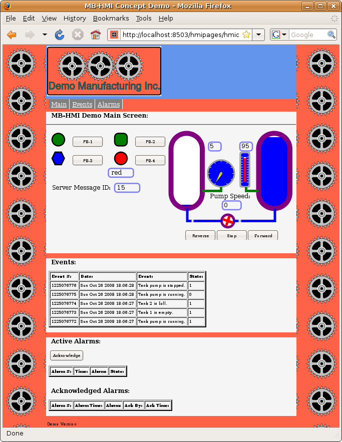

HMIServer
Help
HMIServer
Help
Help - HMI Web Clients
Overview:
This web based HMI system is an open system based on web standards. Therefore there are no hard and fast rules as to how an HMI may be built. It is possible to build a web based HMI using the HMI protocol using your own components and without using any of the components described here. However, the software components provided with the system make building an HMI faster and easier. This section concentrates on building a simple example.
Web Based Applications:
There are two major types of web based applications. In the traditional type, the control logic is all performed on the server, with the client (web browser) being limited to just displaying static HTML from the server. With this sort of application, updating any of the information on the client requires loading a new web page from the server. This can be a compartively slow process which is not suited to displaying rapidly changing information.
A newer type of web application, often refered to as "AJAX" (Asynchronous Javascript And XML), has been developed however which solves this shortcoming. This uses the ability of the web browser to fetch new information from a server without reloading the entire page. The result is the user will see the information on the page update on a continuous basis without being interrupted for a page reload.
There are several means of accomplishing this reading of information. The one most suited to industrial HMI applications is a Javascript function called "XMLHTTPRequest". Despite the name, XMLHTTPRequest can be used to fetch any sort of data, not just XML. In this HMI application, the protocol uses it to fetch JSON encoded data.
Security and 'Same Origin':
A web based HMI normally involves a web page and a web browser. The web browser will request the web page from a web server using what is referred to as an http "GET" operation. An AJAX application can then use XMLHTTPRequest to request updated information from the server using what are referred to as http "POST" operations ("GET" can also be used in some circumstances).
Most web browsers however have a limitation which they impose for security reasons. The limitation is that an AJAX client can only communicate with the same server that the web page came from. This means it is not possible to fetch web pages from one server (or open them from a local disk) and request data from a different server. It also means that it is not possible for an HMI application to fetch data from multiple sources simultaneously.
This is not normally a serious limitation for most applications. Most HMI applications will only need to interact with one server. If they do need information from several servers, then it is usually possible for one server to fetch this information so the HMI client can read it from a single source.
Web Applications and Web Pages:
The first step in building a web based HMI is creating a web page. A typical HMI will consist of a single web page. The reason for this is that (again, for security reasons) there is no simple way to pass information between web pages. This means that code which is running in the context of one web page cannot communicate with code which is running in the context of another web page. This makes it difficult to create a web based HMI which consists of multiple pages.
A single web page does not however restrict you to a single HMI "screen". It is possible to create multiple HMI "screens" on a single web page and then hide all but one screen at a time. Each screen can then be revealed one at a time under program control, giving a form of navigation which is more like a traditional non-web application.
CSS Styling:
Basic Page Layout:
The CSS style sheet for this example is shown below. The CSS styles used in your own project will be different, depending on what you want the display to look like. The important thing to notice here is how the "display" properties for mainscreen, eventscreen, and alarmscreen are set. "display" for mainscreen is set to "block" while the others (eventscreen and alarmscreen) are set to "none". This means the main screen will be displayed when the page is loaded, while the others will be hidden. These values are then changed through Javascript to hide or reveal screens as required. Also, a fixed-width paged design is used to control page presentation to make layout of graphical screens easier.
/* Page layout CSS for the HMI minimal demo demo.
This contains the CSS which controls the overall page layout
and appearance, as well as the display of the navigation menu
and the display of the different "screens".
*/
/* This controls the appearance of the area outside of the defined screens. */
body,
html {
margin:0px;
padding:0px;
background:white;
color:black;
}
/* This provides the background image. */
body {
min-width:1000px;
min-height:600px;
}
/* This provides a filler strip between the nav menu and the main display area. */
#filler {
background:tomato;
margin:0px auto;
width:1000px;
}
/* This handles the navigation (menu) bar. */
#nav {
background:tomato;
font-size: 150%;
margin-top:0px;
margin-bottom:0px;
padding-bottom:2px;
}
#nav ul{
padding-top:5px;
padding-bottom:5px;
list-style:none;
}
#nav li{
display:inline;
}
#nav a {
float:left;
text-decoration:underline;
color:white;
background-color:grey;
border-right:2px solid white;
padding-top:2px;
padding-bottom:2px;
padding-left:5px;
padding-right:5px;
}
#nav a:hover {
background-color:green
}
/* This provides a filler strip at the bottom of the main display area. */
#footer {
background:tomato;
clear:both;
}
#footer p {
padding:5px;
margin:0px;
}
/* This controls display of the main screen. */
#mainscreen {
background:bisque;
width:1000px;
display: block;
}
#mainscreen h2, #mainscreen h3, #mainscreen p {
padding:0px 10px;
}
/* This controls display of the events screen. */
#eventscreen {
background:bisque;
width:1000px;
display: none;
}
#eventscreen h2, #eventscreen h3, #eventscreen p {
padding:0px 10px;
}
/* This controls display of the alarms screen. */
#alarmscreen {
background:bisque;
width:1000px;
display: none;
}
#alarmscreen h2, #alarmscreen h3, #alarmscreen p {
padding:0px 10px;
}
SVG Button Animation with CSS:
The SVG push buttons can be "animated" when they are "clicked" to give immediate feedback to the user. The easiest way to do this is through CSS sytling. In the example below, we reverse the "stroke" property from black to white when the button is activated (clicked). This gives a very effective "flash" to the outline and lettering on the button without requiring any scripting. Other properties can also be used to give different effects.
An alternate method using Javascript is described in the section on the display libraries.
This example also uses "hover" to alter the stroke width when the mouse cursor hovers over the button. This gives the operator the "feel" that this object is special and is active.
/* The following style is used to animate SVG push buttons. It causes the
outline (stroke) of the button to reverse when activated. */
.buttonactivate {
stroke: black;
stroke-width: 5px;
}
.buttonactivate:hover {
stroke: black;
stroke-width: 7px;
}
.buttonactivate:active {
stroke: white;
stroke-width: 5px;
}